Sechs verknüpfte Marktansichten · IMS AP8
Produktfassung 2.0.0-alpha.8. Die sechs Ansichten erklären einen gemeinsamen geprüften Modelllauf. Die BaFin-Gruppenauswertung 2024 ist ein Workshop-Fall: verdiente Beiträge einschließlich Ausland und übernommener Rückversicherung, redaktionelle Gruppen ohne konzerninterne Eliminierung. Keine belegte deutsche Top-40-Direktmarkt-Auswahl. Modellbilanzen, Spartenmix, Strategien und Providerbeziehungen sind Annahmen, keine realen Unternehmensprognosen. Die Kopfzeile zeigt Quellenjahr, redaktionelle Kandidatengruppen sowie nicht ausgewählte Gruppen und nicht modellierte Anteile nach angenommenem Mapping. Diese Quellenreste in Mio. EUR gehören nicht zum Modellanteilsnenner. Quellen-Euro und Modellwährung sind getrennte Einheiten.
Schnell beginnen
- Öffnen Sie Markt und Strategien, oben Markt verstehen.
- Wählen Sie einen Analysefall und zunächst 25 Analyseperioden.
- Klicken Sie Analysevorlage laden, danach Marktansichten frisch berechnen.
- Wählen Sie Periode, Sparte, Vergleichsgruppe und Seite. Diese Auswahl wirkt gemeinsam auf die sechs Ansichten und löst keine neue Rechnung aus.
- Klicken Sie eine VU im Diagramm oder in einer Datentabelle. Der Buchungsnachweis öffnet die exakten VU-/Spartenwerte und Eigenkapitalbrücke.
Ein vollständiger 100er-Fall und jeder frische Export können mehrere Minuten dauern. Während einer Rechnung wartet die Oberfläche; ein weiterer Lauf im gleichen Backend wird abgewiesen. Ungültige Quellen oder Ressourcenüberschreitungen erzeugen kein Teilergebnis. Eine neue Vorlage oder ein Import entwertet die alte Ansicht. Das Demooriginal wird nicht gespeichert oder verändert.
1 · Markt und Sparten im Verlauf
Die Kurven zeigen Periodenergebnis, die Tabelle außerdem Beiträge und Schluss-Eigenkapital beider Seiten. Ergebnis/Beiträge sind Flüsse der bezeichneten Periode; Eigenkapital ist ein Bestand. Achsen sind gerundet, Tabellen exakt. Geldsummen dürfen spartenübergreifend addiert werden, unterschiedliche Expositionsmengen nicht. Der Schieber, Sprungknöpfe und Pfeiltasten im Diagramm wählen dieselbe Periode. Die VU-/Spartentabelle erklärt jeden Summanden.
2 · Fokus, Rivalen und Modellmarkt
Fokus zeigt absolute Beiträge, Ergebnis und Eigenkapital neben Anteil und Rang. Rivalen sind sämtliche übrigen Modell-VUs derselben Periode/Sparte. Der gesamte Modellmarkt bildet den Nenner, auch bei Familien-, Versicherungsgruppen- oder Peer-Auswahl. Diese Auswahl hebt Mitglieder hervor; sie verkleinert den Nenner nicht. Gleiche Beiträge erhalten gleichen Rang; inaktive Anbieter keinen Rang.
Anteil = 100 × gebuchte VU-Beiträge / gesamte Modellbeiträge. HHI = 10.000 × Summe quadrierter VU-Beiträge / Quadrat der gesamten Beiträge. Bei Beiträgen 90/10 sind Anteile 90/10 % und HHI 8.200. Nullnenner oder negative Beitragsbasis liefern keine erfundene Quote. Einzeln gerundete Anteile können in ihrer Summe geringfügig von 100 % abweichen. Registrierte und tatsächlich aktive VUs stehen getrennt: der fiktive Google-Anbieter ist vor Eintritt registriert, aber noch nicht aktiv.
3 · Familien, Streuung und Gewichte
Die Mitgliedschaft stammt aus der tatsächlich wirksamen VU-/Spartenzeile der gewählten Periode und Seite. Ein Familienklick setzt den gemeinsamen Filter. Die Tabelle nennt sämtliche Mitglieder, Anfangsaktiva, Ergebnis, Quote und Min/Max gültiger Einzelquoten. Das Diagramm zeigt höchstens acht Familien; alle übrigen bleiben in der vollständigen Tabelle erreichbar.
Quote = 100 × Periodenergebnis / Anfangsaktiva. Das Familienmittel gewichtet mit Anfangsaktiva: Aktiva 90/10, Ergebnisse 9/3 ergeben 12 %, einzelne Quoten 10/30 %. Ihr ungewichteter Durchschnitt 20 % wäre eine andere Kennzahl. Null-Anfangsaktiva haben keine individuelle Quote. Zusammensetzungswechsel zwischen Seiten/Perioden können mitwirken; keine isolierte Strategiewirkung. Überlappende Peer-Gruppen sind jeweils eindeutige VU-Mengen und werden nicht miteinander addiert. Ein Fokus außerhalb der Filtergruppe bleibt gekennzeichnet.
4 · Wirksame Kundenwechsel
P1 ist Anfangsbestand. Nur eine tatsächlich geänderte Vertragszuordnung zählt als Wechsel. Nicht versichert ist eine eigene Gegenpartei. Kfz- und Sachmengen bleiben getrennt; keine gemeinsame Mengensumme. Bei vielen Wechseln zeigt die Pfadübersicht sechs, die Tabelle alle. Prämie und Risiko gehören dem gültigen Träger. Die Job-Tabelle verbindet Anfrage und tatsächlich wirksame Folgeperiode.
Lebens-Anträge sind ein eigener Kanal: Bearbeitung in P t, früheste Ausgabe P t+1. Wartende oder lediglich bearbeitete Anträge sind keine ausgegebenen Policen. Die Lebens-Tabelle zeigt wirklich ausgegebene Verträge mit Police, Job, Anfrage und Ausgabe. Die vorhandenen Altgarantien bleiben erhalten.
5 · Ereignisse und Entscheidungen
Die Zeitlinie unterscheidet deklarierte Entscheidung, Vorlauf, Verfügbarkeit und tatsächlich belegten Effekt. Beim ICT-Beispiel wird Vorsorge P16 beschlossen, nach vier Perioden P20 verfügbar; der Ausfall beginnt P21. Eine verfügbare Preisantwort greift erst beim vorgesehenen Eintritt. Familien-/Maßnahmenfenster, aktuelle Regeln und Parameter sowie konkrete Kosten-IDs stehen in eigenen Tabellen. Die Nachschau kennt den deklarierten Plan; daraus folgt kein damals verfügbares Zukunftswissen der VU. VUs verwenden Vorperiodeninformation, Kunden aktuelle öffentliche Angebote.
AP7-Fälle verwenden 24 deklarierte Prozessstunden je Periode und halboffene Ereignisfenster. Das ist kein historischer Kalender und keine Jahreskalibrierung. Ein Fall ohne ICT-Kanal bekommt keine erfundene 24-Stunden-Uhr.
6 · ICT sichtbar und erklärbar
Wählen Sie ICT: alle US-Hyperscaler fallen aus, P21 und Erklärrolle CIO. Der rote Primär-/IAM-Pfad zeigt tatsächlich verlorene Stunden; der gewählte Pfad nennt transitive Vorleistungen und verursachende Ereignis-IDs. Vergleichen Sie q-independent und q-dependent: gemeinsame US-Identität ist eine Abhängigkeit, auch bei erklärter EU-Kontrolle des Ersatzanbieters. Unbekannte Kontrolle beweist keine Unabhängigkeit. Jede Beziehung ist eine Workshop-Annahme.
Der Primärpfad kann ausfallen, während wirksamer Ersatz das Ressourcenbudget erhält. Die tatsächlichen Ersatz-/Kapazitätssegmente zeigen Stunden, Faktoren und Ersatzprüfung. Budget zählt Arbeitseinheiten einmal je gemeinsamem Pool; Rückstand zählt Vorgänge der ausgewählten VUs/Sparten. Die beiden Kurven haben eigene Einheiten. Das gesamte Budget wird nicht jedem VU erneut zugerechnet. Wechseln Sie P21 → P22 → P25, um Ausfallende, Bearbeitung und Rückstandsabbau nachzuvollziehen. Job-IDs und Bearbeitungsstunden erklären konkrete Vorgänge.
Claims/Service koppeln Verwaltungsarbeit und Kosten. Versicherungszahlungen werden dadurch nicht verzögert. Kein SCR/MCR-, Storno-, Insolvenz-, empirisches Resilienz- oder Complianceurteil. Ein Fall ohne ICT zeigt diese Grenze ausdrücklich.
Vom Diagramm zur Buchung
Öffnen Sie eine konkrete VU. Die Brücke zeigt exakt:
Δ Schluss-Eigenkapital = Δ Anfangs-Eigenkapital + Δ Beiträge + Δ Kapitalanlage − Δ Versicherungsaufwand − Δ Betriebskosten + Δ Kapitalzuführung − Δ Ausschüttung.
Δ bedeutet Variante minus Basis, in der bezeichneten Periode/Sparte/Fokus-VU. Maßnahmen-/Prozesskosten sind bereits in Betriebskosten enthalten. Gezahlte Leistungen sind keine zweite Belastung derselben Ergebnisrechnung. Die Buchungsidentität ist eine exakte Addition, keine isolierte Kausalzuordnung. Der Modellkanal Ereignis → Abhängigkeit/Strategie → Vorgang/Vertrag → Prämie/Risiko/Kosten ist durch echte Zeilen belegbar. Gleichzeitige Mechanismen und Gruppenwechsel können zusammenwirken; parallel verlaufende Kurven allein sind Beobachtungen. Es werden keine unabhängigen Ursachenanteile erfunden.
Vier Rollen am selben Lauf
| Rolle | Einstieg | Prüfbare Frage |
|---|---|---|
| CEO | Position | Wie stehen Fokus, Rivalen und Modellmarkt absolut und relativ? |
| CIO | ICT / Prozesse | Welche Vorleistung fällt aus, welcher konkrete Ersatz trägt? |
| COO | Wechsel | Wann wird der bearbeitete Vorgang zum gültigen Vertrag? |
| CSO | Familien | Welche Mitglieder und Gewichte bilden den Vergleich? |
Die Erklärrolle setzt den Tastaturfokus in die betreffende Ansicht. Sie erhält Fall und Filter. Alle Diagramme haben Datentabellen; Diagrammpunkte/Markierungen und Tabellenknöpfe sind per Tastatur bedienbar. Hell/Dunkel verwendet dieselben Werte. Auf kleinen Bildschirmen stehen Karten untereinander; breite Tabellen haben einen eigenen tastaturzugänglichen Scrollbereich.
JSON und Einzel-VU-Excel
Analysequelle frisch als JSON exportieren rechnet die vollständige Originalquelle erneut und gibt nur bei gleichem Modellnachweis das portable Quellenbündel aus. Fokus-VU frisch als Excel exportieren tut dasselbe für die gewählte Einzel-VU. Der Familienfilter ändert den Modellmarkt oder die Excelquelle nicht. Importieren Sie das JSON über Eigene Analysequelle importieren und rechnen Sie neu. Quellen-, Modell- und Ansichtsnachweis stehen getrennt in der Oberfläche. Die neue Ansicht hat einen eigenen Digest; Exportbindung ist der Modell-Digest.
Aktuelle Ansichten aus echten Browserläufen
Die sechs Bilder stammen aus dem tatsächlichen 100er-US-Workshop-Lauf in P21, mit Modellnachweis und vollständigen API-Zeilen. Keine gezeichneten Mockups.
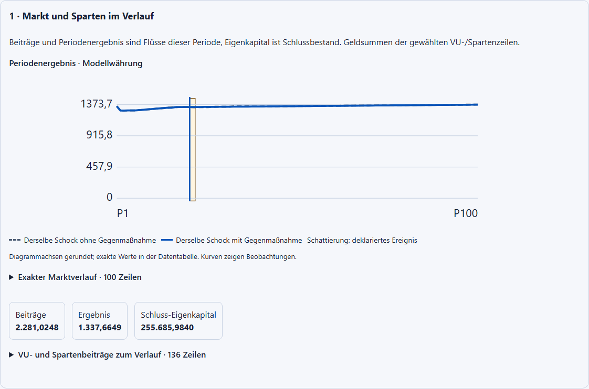
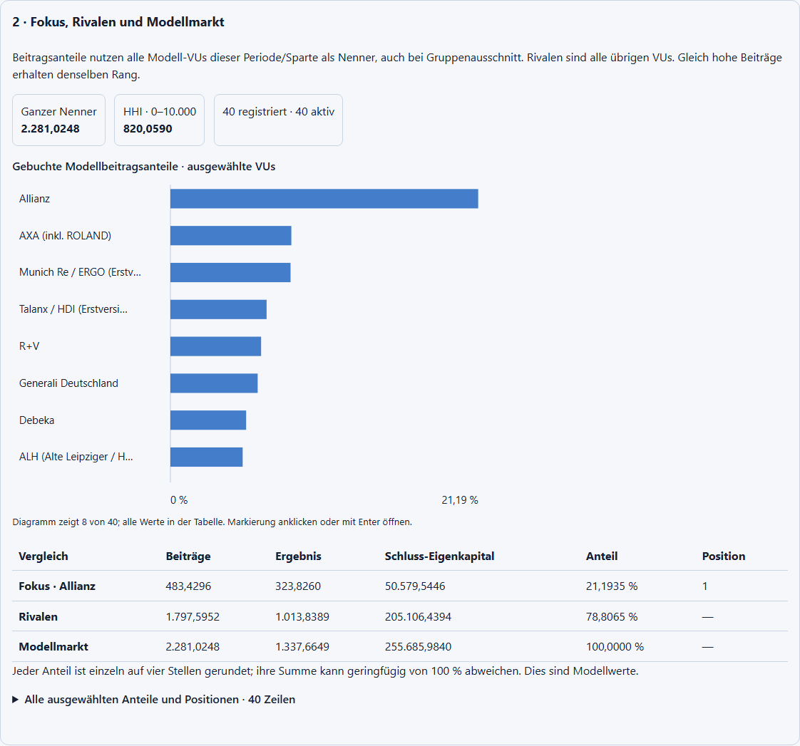
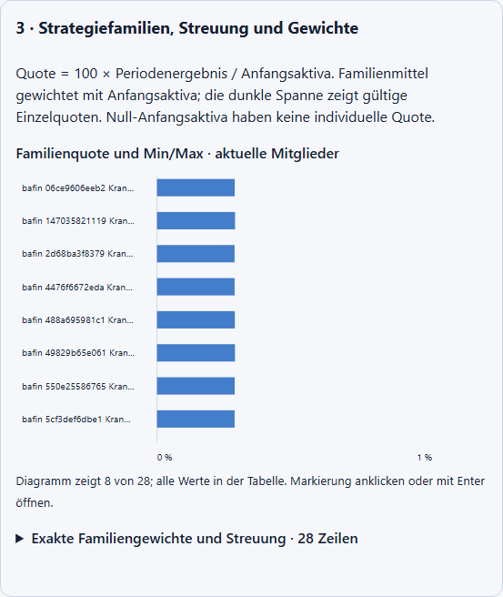
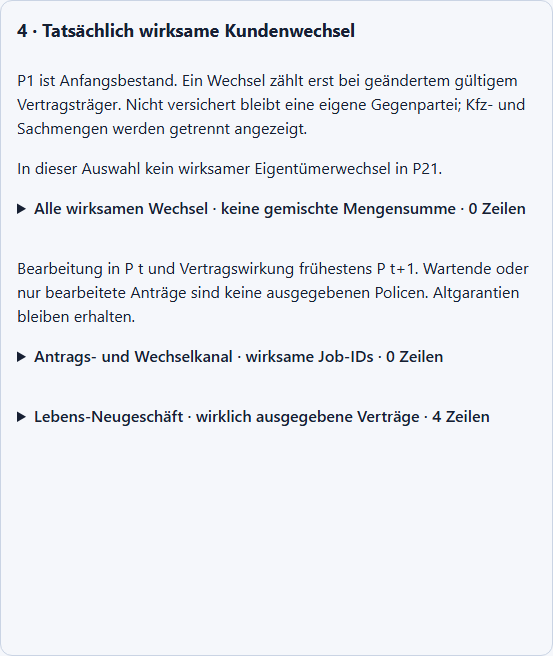
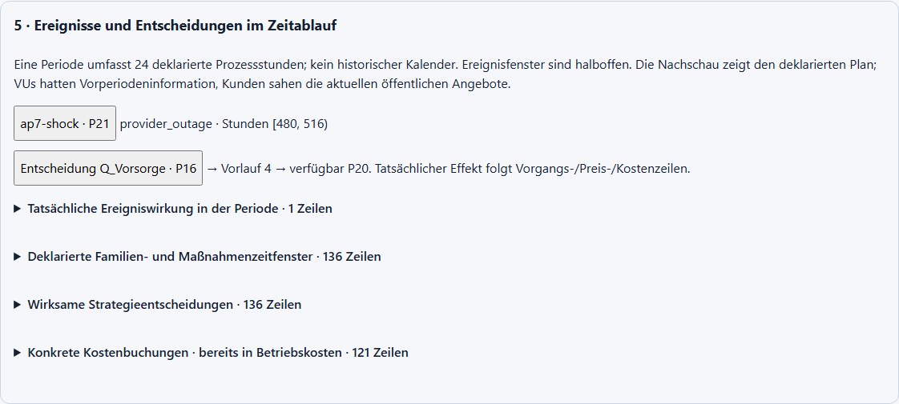
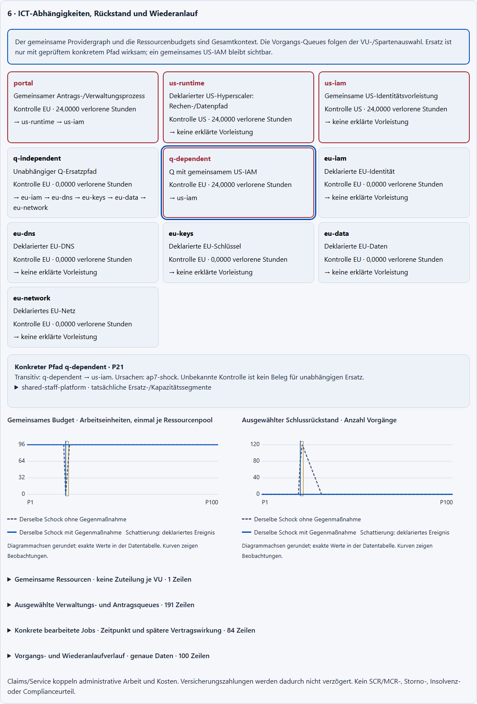
Die folgenden Bilder zeigen denselben 25er-ICT-Fall, Hell/Dunkel und drei Bildschirmgrößen. Die CIO-Ansicht beginnt mit der benannten Ausfall-/Ersatzstruktur; Kurven und vollständige Datentabellen folgen darunter.
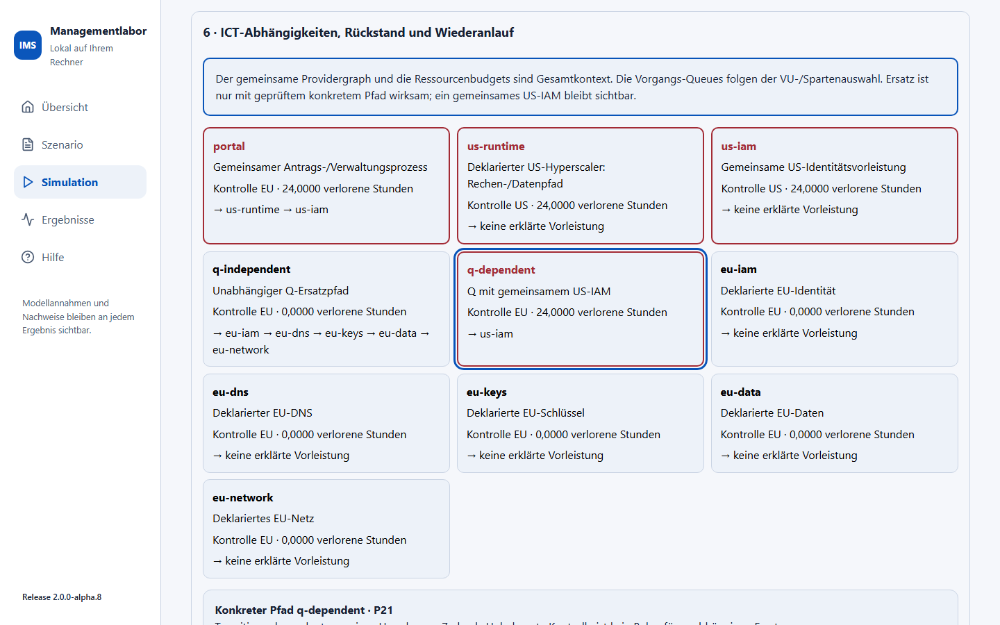
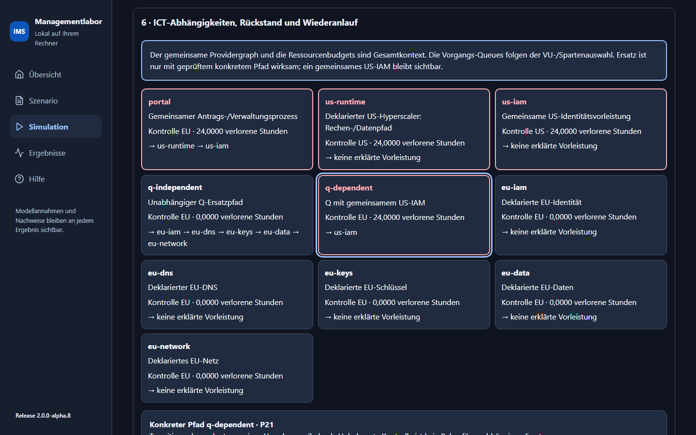
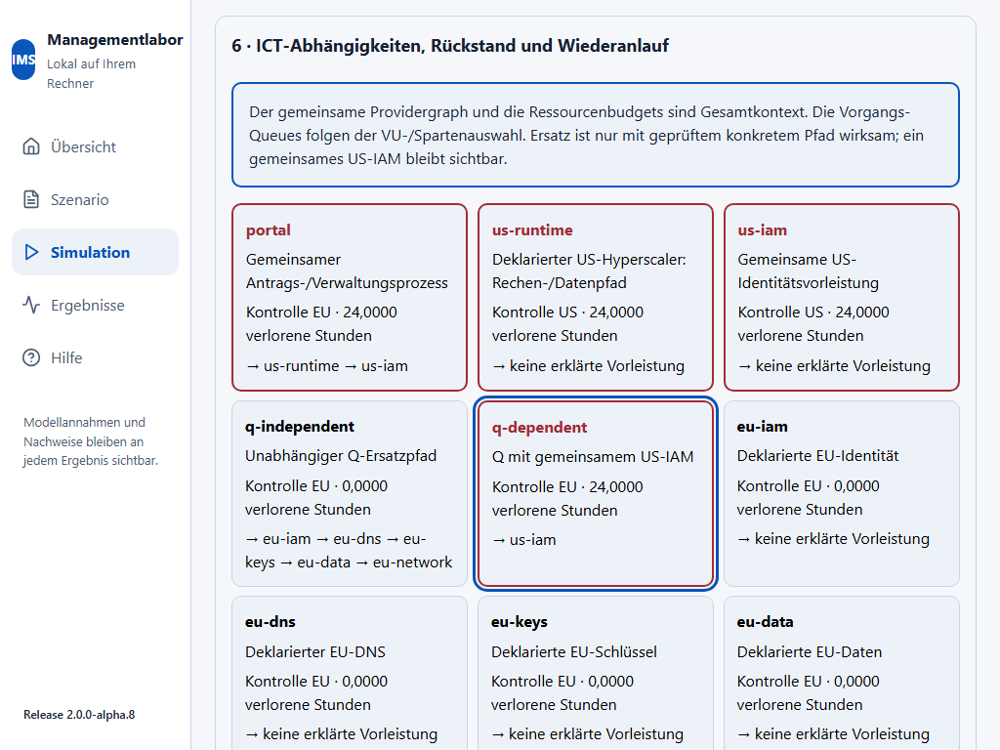
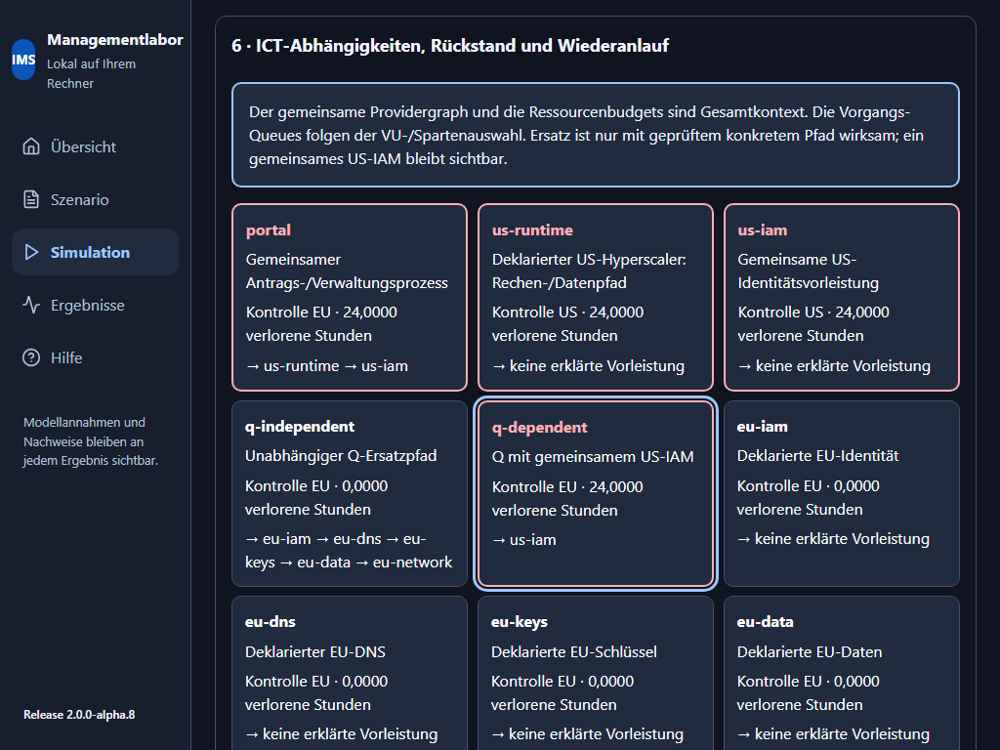
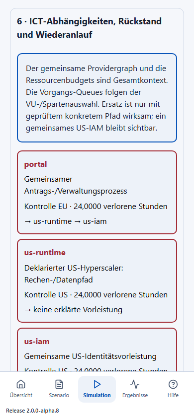
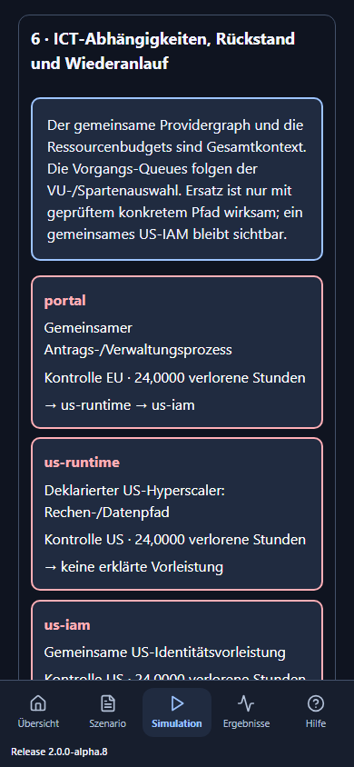
Technische Prüfung, menschliche Anwenderabnahme und Merge bleiben getrennte Nachweise. Die Browserbilder messen keine menschliche Seminarverständlichkeit.